SDKMan — Gerenciando sdks na plataforma Java
O grande objetivo do skdman é facilitar a instalação de ferramentas e ou linguagens que funcionam na jvm como as linguagens java, scala, groovy, kotlin entre outras mas e ferramentas como gradle, maven e etc
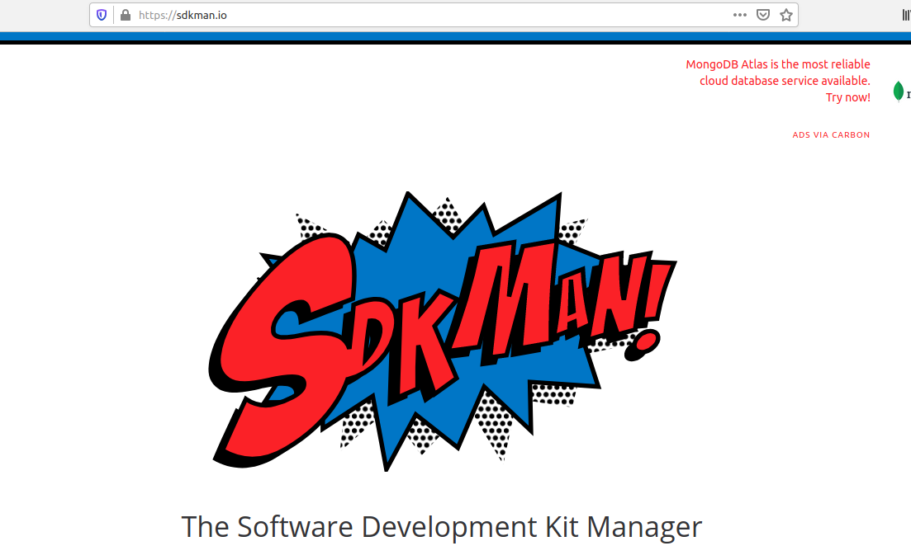
o sdkman é um projeto open source e hospedado no github onde podemos encontrar todos as informações do projeto
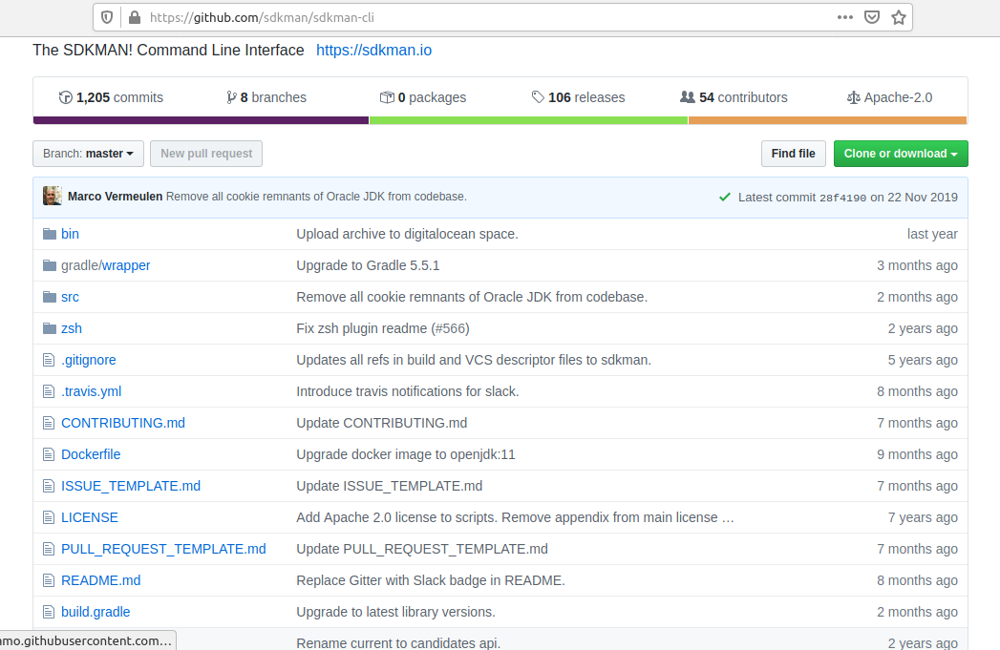
para instalar é bem simples basta usar o comando curl -s https://get.sdkman.io | bash
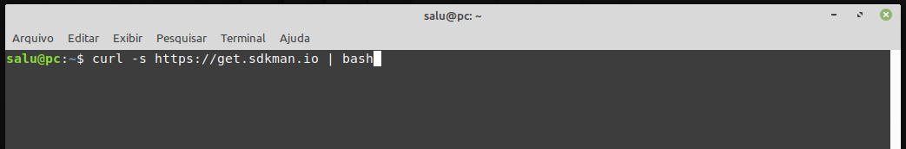
assim que o sdkman for instalado com sucesso teremos a seguinte saida
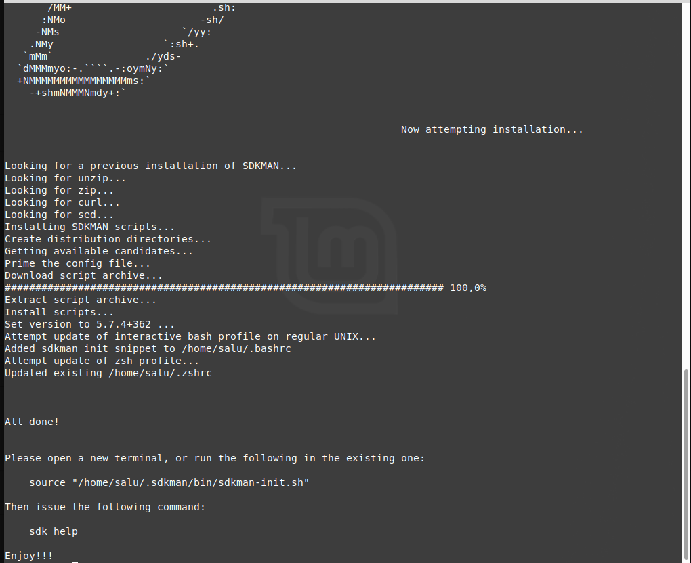
com o comando sdkman version poderemos ver a versão do sdkman instalado
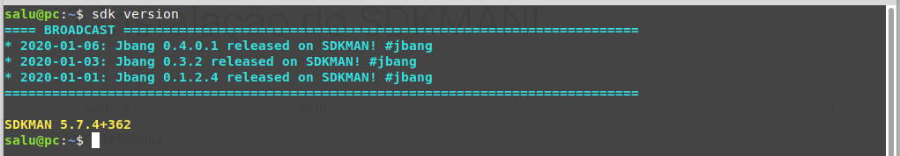
com o sdkman instalado vamos a missão de instalado o jdk 13 que é a ultima versão lançada ate o momento, com o comando sdk list java podemos ver os vendor e as versões disponiveis para instalação
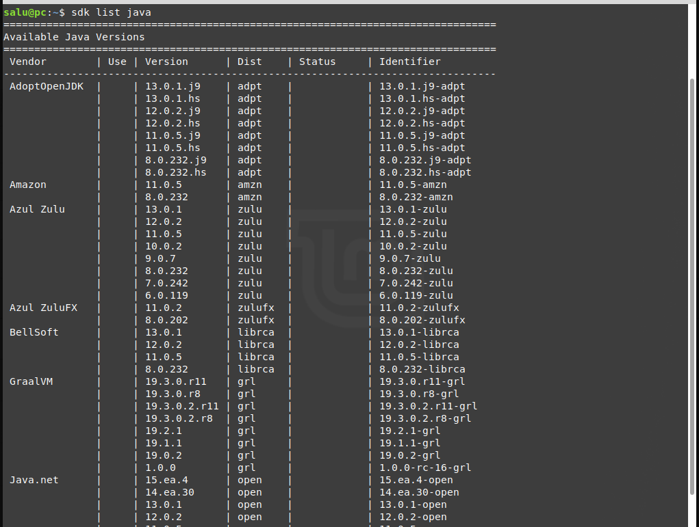
o sdkman fara o download e instalação do jdk 13
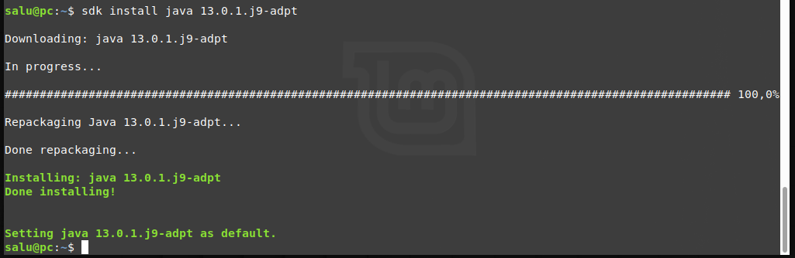
usando o comando java --version podemos ver que o sdkman fez a instalação e ainda colocou no path do sistema
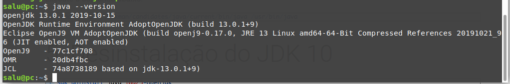
vamos explorar mas um pouco os recursos do sdkman, vamos instalar o maven, com o comando sdk list maven podemos listar todos as versões do maven disponiveis para instalação
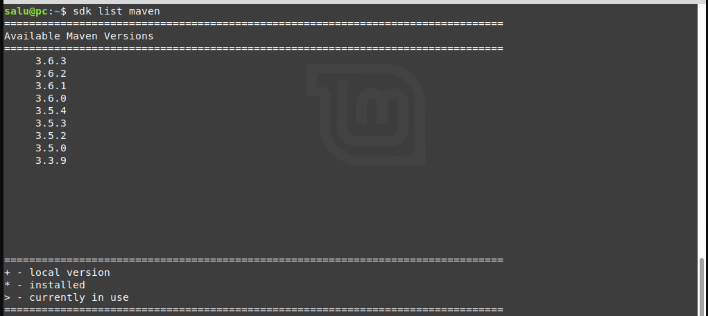
podemos passar a versão que queremos instalar para o sdkman ou usar o comando sdk install maven para instalar a ultima versão do maven
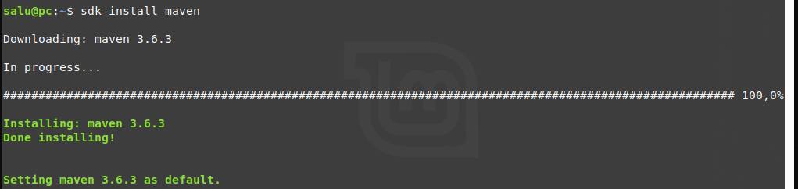
com o comando mvn -version podemos ver a versão do maven instalado
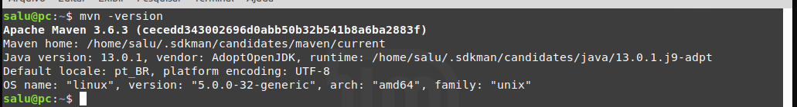
com o sdkman podemos instalar muitas outras linguagens e ferramentas do ecossistema da jvm, abaixo podemos ver todas as versões do gradle que conseguimos instalar com ajuda do sdkman
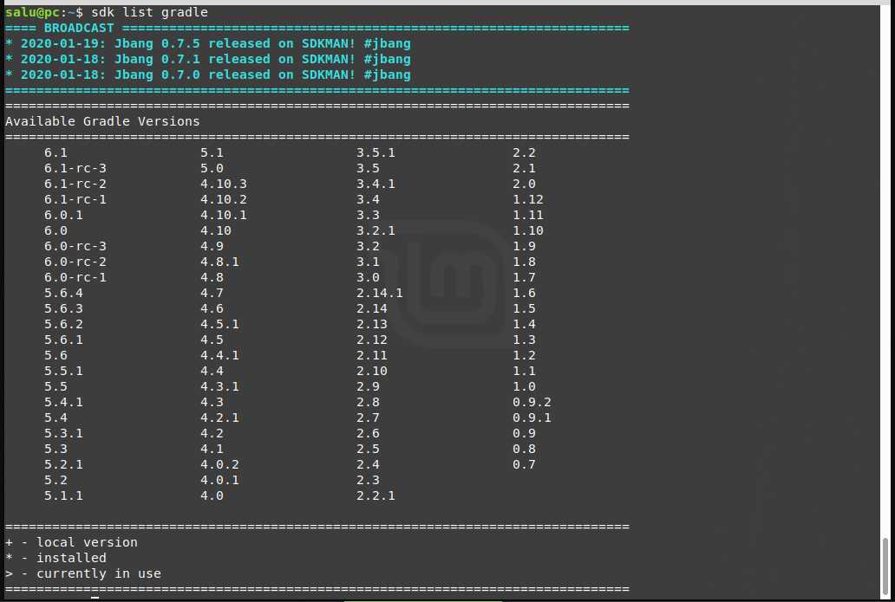